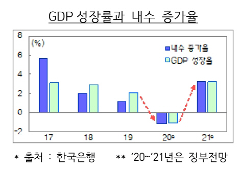

[주요내용] : 정부가 내년 경제성장률을 국내외 주요 기관 전망치보다 높은 3.2%로 제시했다. 이는 최근 신종 코로나바이러스 감염증(코로나19) 3차 유행에 따른 사회적 거리두기 3단계 격상 가능성을 반영하지 않은 수치로 안일한 낙관이라는 지적이 나온다.
정부는 17일 문재인 대통령 주재로 확대경제장관회의를 열고 이 같은 내년 경제 전망을 내놓았다. 정부는 내년부터는 올해 마이너스 성장(-1.1%)에서 벗어나 3.2% 성장율을 보일 것으로 전망했다. 지속적인 확장재정과 수출 증가로 내수·수출이 동반 개선되는 것은 물론, 물가상승률도 올해 0%대 저물가 기조와 달리 1.1%로 상승할 것이라고 내다봤다. 그러나 코로나19 재확산세가 거센 상황 속에서 정부가 제시한 내년 성장률 3.2%는 `나 홀로` 장밋빛 전망치라는 평가다. 앞서 발표됐던 한국은행 전망치(3%)뿐 아니라 한국개발연구원(KDI·3.1%), 국제통화기금(IMF·2.9%), 경제협력개발기구(OECD·2.8%)보다 높다. 정부 전망치는 사회적 거리두기 3단계 격상 가능성을 고려하지 않았다는 데 맹점이 있다. 김용범 기획재정부 1차관은 "3단계 상향까지는 올해 전망치(-1.1%)와 내년 전망치(3.2%)에 사실 반영이 안됐다"며 "(3단계 상향이)발생하면 정부가 내놓은 전망보다는 금년말 내년초에 추가 하방리스크로 작용해 추가적인 조정이 필요하다"고 했다.
[주요내용] : 치열한 미국과 중국 간 신냉전의 포화 속에서도 세계 각지 자본이 이익을 좇아 중국으로 대규모 흘러 들어오면서 지난 반년 사이 달러 대비 위안화 가치가 10% 가까이 뛸 정도로 위안화 초강세 현상이 나타나고 있다. 일부 기관은 내년에도 위안화 강세 흐름이 계속돼 환율이 근 30년 만에 달러당 6위안 밑으로까지 내려올 가능성이 있다는 전망도 내놓고 있다. 하지만 지나친 위안화 강세는 중국의 수출 경쟁력을 저해하는 등 여러 심각한 부작용을 초래할 수 있어 상황을 관망 중인 중국 당국이 어느 시점에는 위안화 강세 흐름에 제동을 걸 것이라는 관측도 고개를 든다. 환율이 떨어지면 그만큼 화폐 가치는 오른다. 지난 반년 사이 달러 대비 위안화 가치가 10% 가까이 치솟은 것이다. 위안화 초강세의 주요 원인으로는 뚜렷한 달러 약세 흐름과 중국 경기 회복 기대감에 따른 글로벌 자본의 중국 투자 증가 두 가지가 우선 거론된다. 블룸버그 통신에 따르면 올해 세계 펀드들은 올해 중국 주식과 채권 보유량을 30% 이상 늘렸다. 툭하면 시장을 뒤흔든 심각한 미중 갈등이라는 불확실성이 걷히지 않았음에도 중국 투자가 늘어나는 것은 수익률과도 관계가 크다. 현재 중국 정부의 10년 만기 국채 수익률은 3.3%가량으로 0.90%가량인 미국 10년 만기 국채 수익률보다 훨씬 높다. 코로나19 충격에서 여전히 벗어나지 못한 채 '제로 금리'를 장기간 유지하려는 미국과 부양책을 서서히 거두고 통화 정책 정상화를 모색하는 중국 간의 통화 정책 차별화도 위안화 가치를 끌어올리는 요인이 되고 있다는 분석이 있다. 위안화 강세 흐름이 당분간 이어질 것이라는 시 장의 전반적 기대감도 중국 투자 흐름을 강화하는 한 요인이 된다.
[주요내용] : 네이버와 카카오가 금융복합그룹감독법의 감독대상에서 제외될 전망이다.
카카오는 금융회사 자산규모가 적고, 네이버는 금융관계 법령의 적용 대상에서 빠지기 때문이다.
삼성생명 보유 삼성전자 지분과 관련돼 있는 집중위험에 대해선 추가 자본부담이 크지 않을 것이라고 밝혔다.
도규상 금융위원회 부위원장은 16일 열린 공정경제3법 브리핑에서 카카오가 감독대상에 지정되는지를 묻는 질문에 대해 "감독대상 지정은 시행령에서 구체화되는데 현행 모범규준을 최대한 참고하려고 한다"면서
"카카오는 은행의 자산이 20조원을 넘지만 비주력업종 자산이 1000억원대 수준이어서 지정이 아니다"고 말했다.
네이버에 대해선 도 부위원장은 "네이버는 전자금융업만 영위하고 있고, 전자금융거래법은 금융복합그룹감독법 적용 대상이 아니다"고 했다.
카카오는 인터넷전문은행인 카카오뱅크와 함께 자본시장법의 적용을 받는 카카오페이증권을 보유하고 있어 금융복합그룹에 해당한다.
다만 금융복합그룹 소속 금융회사의 자산총액 합계액이 5조원(모범규준 기준)에 미치지 못해 감독대상에 포함되기 어렵다는 뜻이다.
네이버는 전자금융업자인 네이버파이낸셜과 보험대리점 엔에프보험서비스를 계열사로 두고 있다.
네이버파이낸셜과 신설 엔에프보험서비스의 금융자산 총액도 5조원을 밑돌고 있다.
다만 도 부위원장은 "법률 시행 이후에 앞으로 필요하다면 여러 측면에서 리스크가 있는지 검토해보겠다"고 덧붙였다.
[주요내용] : 시중은행들이 가계대출을 옥죄는 대신 기업대출의 문은 활짝 연다.
신용대출 등 가계대출이 비정상적으로 급증하면서 가계대출 총량 관리에 돌입했지만 ‘이자 장사’를 접을 순 없어서다.
더욱이 바젤Ⅲ 개편안을 조기 도입한 KB국민·신한·우리·NH농협은행은 기업대출 비중을 절반 이상으로 끌어올려야 한다.
비중을 산정하는 기준이 잔액에 한정된 것은 아니어서 단순히 잔액을 비교한 것보다는 높다.
기준은 신규 대출뿐만 아니라 연기, 재약정, 대환 등을 모두 포함해 금융당국과 정한 산정법을 따른다.
은행들은 비중 관리에 신경 써왔지만 최근 몇 달 사이 가계대출이 폭증하며 균형이 무너졌다.
시중은행 관계자는 “신용대출 규제의 역효과로 가계대출이 더 늘어나면서 밸런스를 맞추기 어려워졌다”고 말했다.
시중은행 리스크 관리 담당 임원은 “지난달 가계대출 증가액이 유독 크고 시기적으로 기업대출이 늘어날 요인이 없어 강한 조치를 취할 수밖에 없었다”며
“연말까지 기업대출은 가능한 만큼 늘리고 가계대출은 바짝 조이는 전략으로 가려 한다”고 말했다.